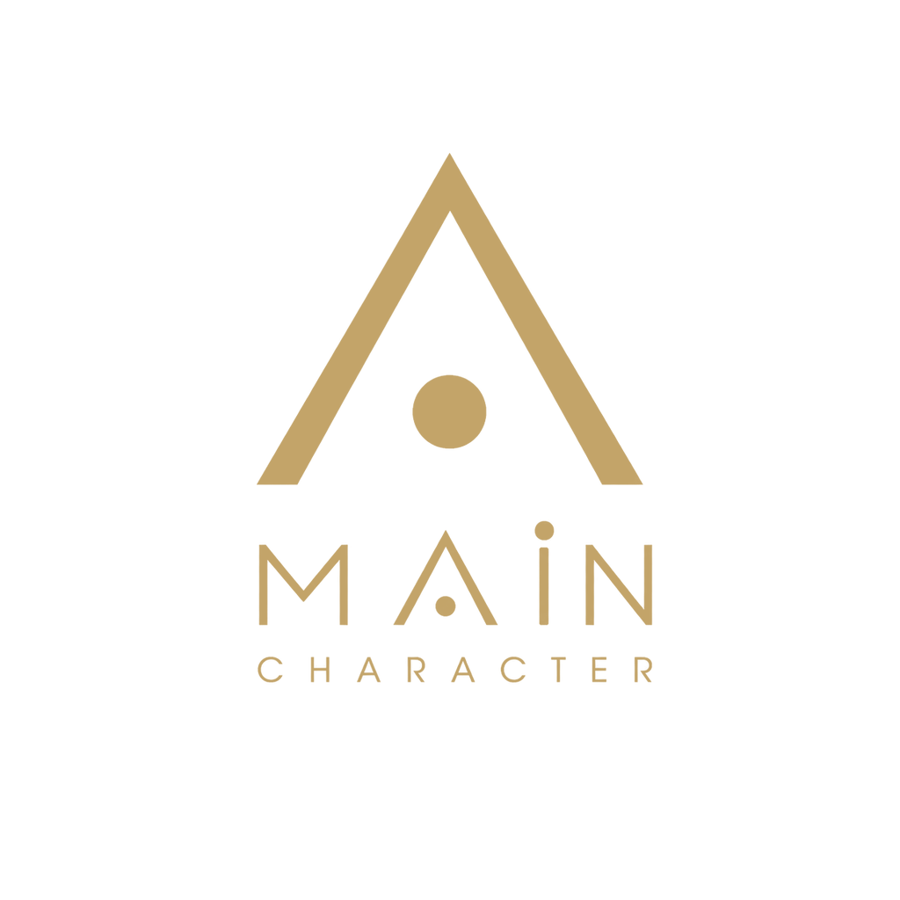
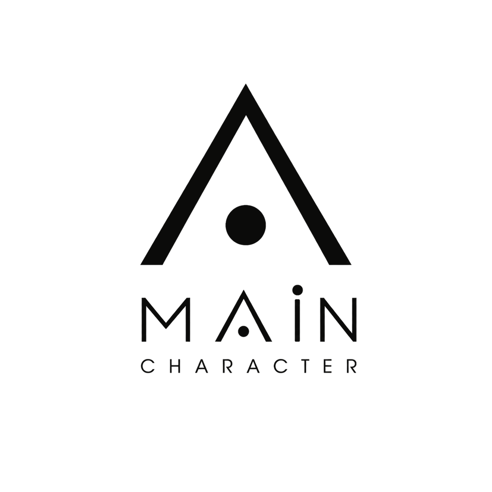
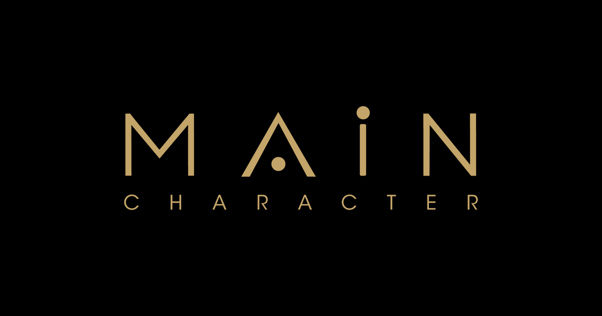

One brand system.
Many surfaces.
This page tests the public web asset pack that future mC websites, SaaS products, social profiles, documents, and email signatures can reference. The protected vector source system remains in the private mc-marks repository.
Live GitHub Pages delivery, versioned CDN delivery, logo variants, icons, tokens, favicons, and a simple implementation pattern that another developer can copy.
Open the public asset repository → · Open a pinned CDN asset →
{kind=link}
1. Logo variants
2. Icons and social identity

A-dot mark
Application icon
Social preview card3. Brand tokens
tokens/mc-ds-tokens.csstokens/mc-ds-tokens.csstokens/mc-ds-tokens.css4. Developer primer
✓ Use this public repository for web-deliverable assets.
✓ Pin production URLs to @v1.0.0; use @main only for controlled previews.
✓ Use mc-marks for the canonical vector mark system and proposed mark taxonomy.
✓ Do not edit the master raster package or copy private source files into a product repo.
<img src="https://maincharacter-me.github.io/mc-brand-assets/logo/mc-logo-gold.svg"
alt="mAInCharacter" height="40">5. Business primer for Tom
mC now has two connected but separate brand layers: a private source-of-truth mark system and a public web asset library. This prevents every website or SaaS project from inventing its own logo treatment while keeping the underlying design system controlled.
The growth strategy is to use the same trusted identity across the advisory relationship, future digital products, social content, and the Asset Store. The first commercial proof should be one narrow mC-authored artifact. The website is the credibility layer; content creates attention; the Asset Store creates a low-friction purchase; advisory remains the high-value relationship.
Not yet included: D13–D15 rights, take-rate, and commercialization decisions. Those remain intentionally open.